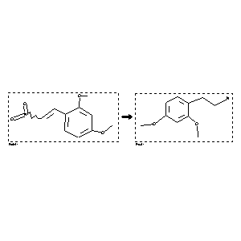

 |
| FA | RX(1); FLST(1); RX(2) |
Reaction (1 of 1)
| Reaction ID | 2144319 |
| Reactant BRN | 2458177 |
| Reactant | 2,4-dimethoxy-b-nitro-styrene |
| Product BRN | 2804922 |
| Product | 2,4-dimethoxy-phenethylamine |
| No. of Reaction Details | 2 |
Reaction Details (1 of 1)
| Reaction Classification | Preparation |
| Yield | 72 percent (BRN=2804922) |
| Reagent | Me3SiCl, LiBH4 |
| Solvent | tetrahydrofuran |
| Time | 24 hour(s) |
| Temperature | 22 |
| Citation Pointer | 5590996; Journal; Miessner, Merle; Crescenzi, Orlando; Napolitano, Alessandra; Prota, Giuseppe; Andersen, Svend Olav; Peter, Martin G.; HCACAV; Helv.Chim.Acta; EN; 74; 6; 1991; 1205-1212; |
Reaction Details (2 of 1)
| Reaction Classification | Preparation |
| Reagent | LiAlH4 |
| Solvent | diethyl ether; benzene |
| Citation Pointer | 80679; Journal; Khafagy,E.Z.; Lambooy,J.P.; JMCMAR; J.Med.Chem.; EN; 9; 1966; 936-940; |
Reference (1 of 2)
| Citation Number | 80679 |
| Document Type | Journal |
| Authors | Khafagy,E.Z.; Lambooy,J.P. |
| CODEN | JMCMAR |
| Journal Title | J.Med.Chem. |
| Language Code | EN |
| (Series) Volume | 9 |
| Publication Year | 1966 |
| Page | 936-940 |
Reference (2 of 2)
| Citation Number | 5590996 |
| Document Type | Journal |
| Authors | Miessner, Merle; Crescenzi, Orlando; Napolitano, Alessandra; Prota, Giuseppe; Andersen, Svend Olav; Peter, Martin G. |
| CODEN | HCACAV |
| Journal Title | Helv.Chim.Acta |
| Language Code | EN |
| (Series) Volume | 74 |
| Number | 6 |
| Publication Year | 1991 |
| Page | 1205-1212 |